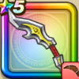

メタルウィング
攻略班 6.0点 / かまいたちパワフルスロースライムブロウ鉄甲斬メタルブロウ※錬成で強化可能
くわしい特徴
【レベル別習得スキル】 Lv1メタル系+1ダメージ Lv1かまいたち（消費MP：5）エレメント系に威力180%それ以外の系統には130%の体技ダメージを与える Lv10パワフルスロー（消費MP：8）全力で投げつけて敵全体に攻撃力が低下しない威力110%の体技ダメージを与える Lv15スライムブロウ（消費MP：5）敵全体のスライム系に威力180%それ以外の系統には110%の斬撃ダメージ Lv20鉄甲斬（消費MP：14）敵1体に威力210%の斬撃ダメージを与え、たまに守備力を1段階下げる Lv30メタルブロウ（消費MP：24）敵全体のメタル系に必ずダメージを与えそれ以外の系統には220%の斬撃ダメージ Lv35マシン系へのダメージ+10% Lv45会心率+2% Lv50攻撃力+12錬成スキル改1マシン系へのダメージ+10%改2メタルブロウ改（消費MP：29）敵全体のメタル系に必ず+7ダメージを与え、それ以外の系統には300%の斬撃ダメージ改3けもの系へのダメージ+10%改4錬成ぶき特別演出解放・メガモン討伐結果発表時に特別演出が追加・武器の見た目に特別なエフェクトが追加 【限界突破スキル】 1凸スキルの斬撃・体技ダメージ+5% 2凸スキルの斬撃・体技ダメージ+5% 3凸スキルの斬撃・体技ダメージ+5% 4凸スキルの斬撃・体技ダメージ+5%